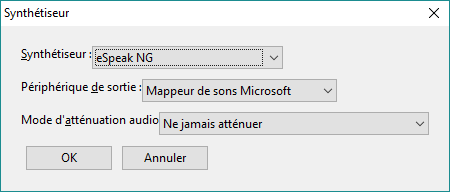
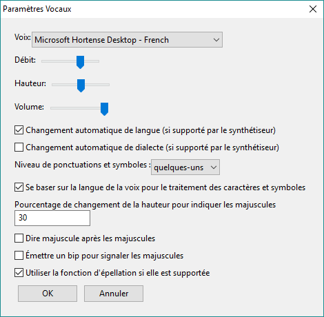
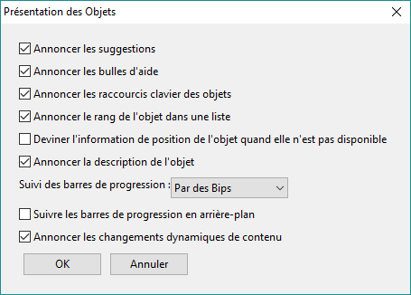
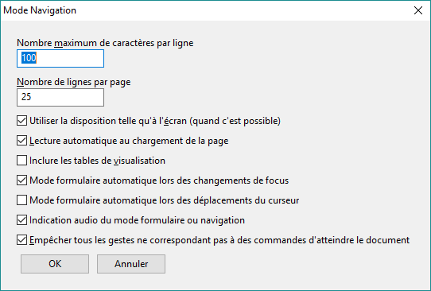
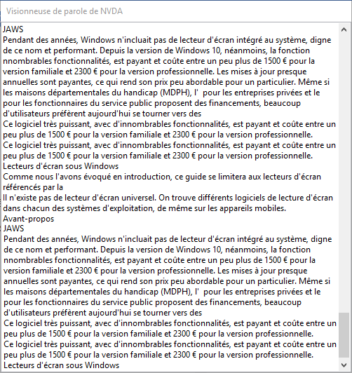
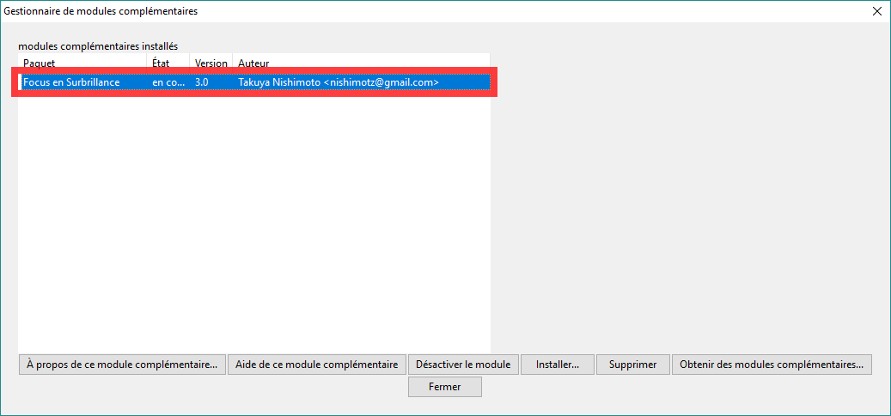

Installation et configuration de NVDA
Installation de NVDA
Note : le site francophone de NVDA propose toujours la dernière version stable en téléchargement. Il s'agit actuellement de la version 2016.3. La 2016.4 devrait être publiée avant la fin de l'année 2016 et elle sera proposée au téléchargement sur le site francophone dès qu'elle sera disponible. Le fichier se télécharge assez rapidement.
- Télécharger la dernière version de NVDA.
- Une fois que le fichier est téléchargé, l'exécuter et accepter la licence.
Contrairement à JAWS, NVDA est un logiciel open source et peut être utilisé gratuitement. Il est financé à l'aide de dons.
- Vous avez ensuite le choix d'installer NVDA sur votre ordinateur ou d'en faire une version portable.
Dans le cas où vous l'installez sur l'ordinateur, il suffit de suivre les instructions. Si vous souhaitez obtenir une version portable de NVDA, il vous suffit de créer un dossier et d'indiquer, lors de l'installation, où les fichiers de la version portable doivent être copiés. L'intérêt de la version portable est que vous pouvez la copier n'importe où, notamment sur un support USB, et l'exécuter sur n'importe quel ordinateur.
- L'installation est très rapide. Lorsqu'elle est terminée, vous n'avez pas besoin de redémarrer l'ordinateur, NVDA peut être lancé dès la fin de l'installation.
Configuration de NVDA pour l'évaluation
Dialogue de démarrage
Lorsque vous démarrez NVDA pour la première fois, une boîte de dialogue aparaît. Elle vous propose de :
- Choisir la touche NVDA (voir Installation et configuration des lecteurs d’écran - Avant de commencer).
Vous pouvez ainsi cocher « Utiliser verrouillage majuscule comme touche NVDA », si vous souhaitez que la touche Verrouillage majuscule serve de touche NVDA en plus des touches Insert.
- Choisir si NVDA doit démarrer ou non au lancement de Windows.
- Décider d'afficher ce dialogue de bienvenue à chaque lancement de NVDA.
Note : Si vous changez d'avis, vous pouvez retrouver ce dialogue de bienvenue dans « Aide > Dialogue de bienvenue ».
Synthèse vocale
eSpeak, la synthèse vocale proposée par défaut dans NVDA, est pour beaucoup inaudible et désagréable à écouter. Il existe d'autres synthétiseurs vocaux téléchargeables sur la page des modules complémentaires, sur le site francophone de NVDA.
Une fois que vous aurez installé le module qui vous convient, vous pourrez changer de synthèse vocale en appuyant simultanément sur NVDA + Contrôle + S. Choisir la synthèse qui vous convient à l'aide des flèches haut et bas et valider par Entrée.

Pour changer la vitesse de lecture, la langue de la voix et la quantité d'informations à prononcer, aller dans le menu NVDA en appuyant simultanément sur NVDA + n, aller dans « Préférences », puis « Paramètres vocaux ». Effectuer les réglages et confirmer avec « OK ».
Il est possible de dire à NVDA de prononcer ou non chaque caractère tapé en appuyant sur NVDA + 2 du clavier alphanumérique, de prononcer ou non chaque mot tapé en appuyant sur NVDA + 3 du clavier alphanumérique.
Modifier les paramètres vocaux à la volée
Vous pouvez modifier les paramètres vocaux, tels que la vitesse, la hauteur, la langue, etc. comme suit :
- NVDA + Contrôle + flèches droite et gauche permet de passer d'un paramètre à l'autre.
- NVDA + Contrôle + flèches haut et bas, permet de modifier le paramètre (plus vite, moins vite par exemple)
Note : ce raccourci concerne l'utilisation de NVDA en version clavier de bureau. Pour la version clavier portable, rajouter la touche majuscule aux combinaisons évoquées précédemment.
Régler les préférences de NVDA pour l'évaluation

Dans Paramètres vocaux, cocher les cases « Changement automatique de langue » et « Changement automatique de dialecte ».

Dans Présentation des objets, cocher « Annoncer les suggestions », « Annoncer les bulles d'aide », « Annoncer la description de l'objet », « Annoncer les changements dynamiques de contenu ».
Pour entendre l'évolution d'une barre de progression, vous pouvez choisir dans la liste déroulante si elle doit être vocale, par des bips, les deux ou être désactivée. Une fois tous les réglages effectués, confirmer avec « OK ».
Mode formulaire ou application
Il est possible de choisir comment activer le mode formulaire ou application dans « Préférences > Mode navigation ».

Lorsque « Mode formulaire automatique lors des changements de focus » est activé, NVDA passe en mode formulaire dès que l'on atteint un champ de formulaire ou une application avec la touche tabulation.
Lorsque « mode formulaire automatique lors du déplacement du curseur » est cochée, NVDA passe en mode formulaire lorsqu'on se déplace avec les flèches sur un champ de formulaire.
Il est enfin possible de demander à NVDA d'indiquer ou non par un signal sonore si le mode formulaire ou navigation est activé.
Confirmer vos réglages avec « OK ».
Visionneuse de parole
Cet outil vous permet d'afficher à l'écran ce que prononce NVDA, si vous ne voulez pas forcément écouter ce que dit la synthèse vocale.
Pour activer la visionneuse de parole, aller dans le menu NVDA en appuyant sur NVDA + n, choisir « Outils », puis « Visionneuse de parole ».

La visionneuse de parole affiche l'ensemble des informations vocalisées, ce qui peut être très utile pour étudier plus finement le problèmes de restitution.
Modules complémentaires
La communauté a développé un grand nombre de modules pour faciliter l'utilisation de NVDA et des applications.
Voir le focus
Le module Focus Highlight ajoute un rectangle coloré montrant où se trouve le curseur NVDA.

Pour installer ce module, le télécharger, puis cliquer sur le fichier.
La boîte de dialogue pour l'ajout de modules s'ouvrira. Il suffit de sélectionner « Ajouter ». Il vous sera alors demandé de redémarrer NVDA pour terminer l'installation.
Étendre les commandes de base de NVDA
Le module complémentaire « Extension des commandes de base de NVDA » (NVDAExtensionGlobalPlugin) permet, entre autres, de rajouter des éléments dans la boîte de dialogue pour afficher une liste de liens, de titres, de régions. On active cette boîte de dialogue à l'aide de NVDA + F7. On peut alors choisir d'afficher la liste des liens, des titres, des contrôles de formulaire, des boutons radio, etc. et d'en tester l'accessibilité.
Ce module se trouve sur la page francophone des modules complémentaires de NVDA.